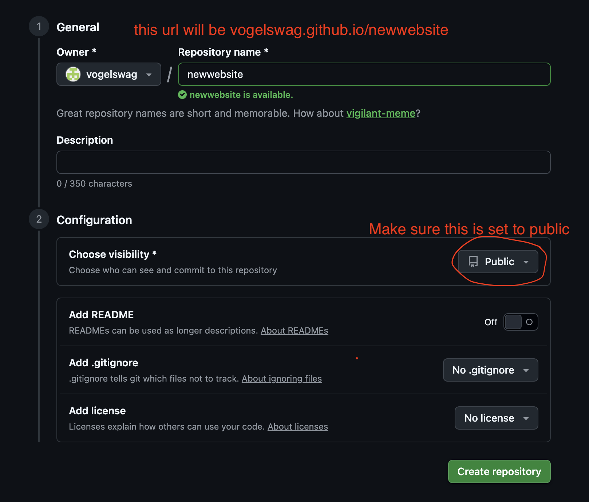
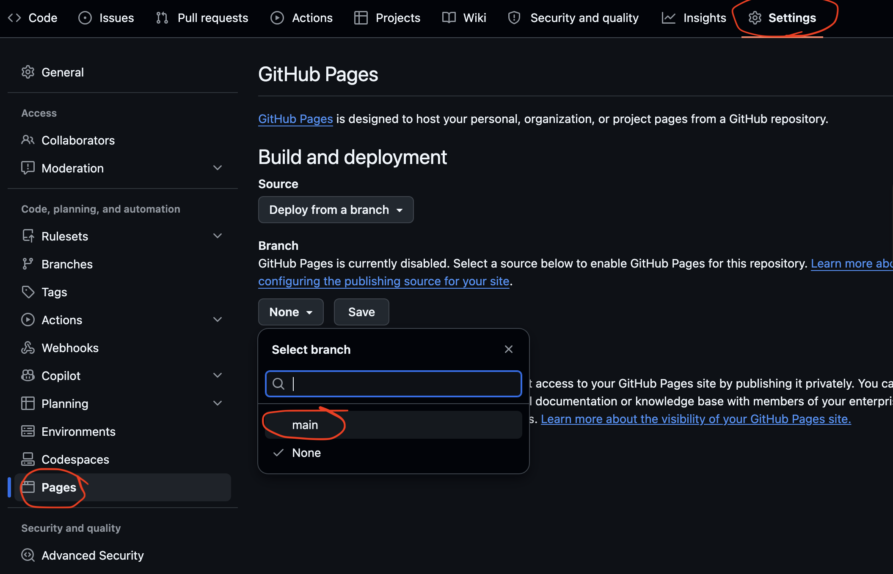

How to make a silly useless website
(for free)(from scratch)
- Make a github account
make your username something you would want in the url of all of your websites
- Make a new repository (a repository is just like a project folder). If you name it "*yourusername*.github.io", that will be the URL. If you name it something else, the url will be *yourusername*.github.io/*repositoryname*

- In that repository, make a file called "index.html"
- Add whatever text you want to that file!
- Press "commit changes" (this just means save and publish). It can take a minute to see your changes.
- If your page isn't working, go into settings->pages and set "branch" from "none" to "main"

Extra info:
Now that you have a website you can add more stuff to it!
Here is a basic template you can use if you want to add styling information (change colors, fonts, formatting, etc.):
<style>
body {
put whatever CSS (style info) here. for example:
font-family: Times;
font-size: 16px;
background-color: yellow;
text-align: left;
}
</style>
<body>
Put all of your content here
</body>
If you want to add an image to your website, upload it to your repository. Wherever you want to put it, paste this:
<img src="url_to_image.jpg">
and then change the src to the name of your image. If you want to change the size, you can paste this and change the width/height to whatever size you want:
<img src="url_to_image.jpg" width="500" height="300">